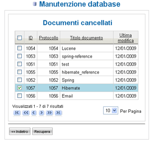

Manutenzione database |
In LogicalDOC l'amministratore del sistema può effettuare la manutenzione
del database documentale selezionando la voce di menù Sistema e poi
Manutenzione database. Viene così visualizzata una pagina con i dati
riguardanti la dimensione del database documentale, il numero totale dei
documenti, la dimensione occupata da tutti i documenti cancellati e il numero
dei documenti cancellati.
Figura 57: Manutenzione database
Questa funzionalità viene fornita all'amministratore perché in LogicalDOC la
cancellazione di un documento è solo un'operazione logica, che non
comporta una cancellazione fisica dal disco né dal database. Le operazioni
che possono essere compiute sul database documentale sono due: la cancellazione fisica
dei documenti e il recupero di documenti cancellati logicamente. Nel primo
caso, premendo il pulsante Pulisci Database, dopo un messaggio di avviso,
viene lanciata l'esecuzione della operazione pianificata Pulizia Database, che
va a cancellare fisicamente e dal database tutti i documenti precedentemente
cancellati solo logicamente. Nel secondo caso, premendo il pulsante
Recupera, si consente di recuperare i documenti precedentemente cancellati
logicamente dall'applicazione: viene visualizzato un elenco paginato di tutti i
documenti cancellati, selezionare i documenti che si vogliono riportare
nell'applicazione e premere il pulsante Recupera. Questi documenti verranno
riportati nella stessa cartella in cui erano presenti quando erano stati
cancellati, esattamente come avviene nel sistema operativo Windows quando,
all'interno del Cestino, si effettua il ripristino di un documento.

Figura 58: Recupero documenti cancellati
| Si consiglia all'amministratore del sistema di gestire adeguatamente il database documentale ripulendolo periodicamente, in quanto i documenti cancellati solo logicamente potrebbero raggiungere una dimensione eccessiva che andrebbe a ridurre notevolmente lo spazio su disco della vostra macchina. | |
Come già accennato precedentemente, è presente in LogicalDOC l'operazione pianificata Pulizia Database che periodicamente va a cancellare tutti i documenti cancellati dagli utenti di LogicalDOC. Se non desiderate che questo avvenga in automatico occorre disabilitare la procedura dal pannello di gestione delle Operazioni Pianificate.